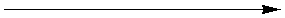

Enzyme Technology
Preparation of enzymes for sale
Once the enzyme has been purified to the desired extent
and concentrated, the manufacturer's main objective is to retain the activity.
Enzymes for industrial use are sold on the basis of overall activity. Often a
freshly supplied enzyme sample will have a higher activity than that stated by
the manufacturer. This is done to ensure that the enzyme preparation has the
guaranteed storage life. The manufacturer will usually recommend storage
conditions and quote the expected rate of loss of activity under those
conditions. It is of primary importance to the enzyme producer and customer that
the enzymes retain their activity during storage and use. Some enzymes retain
their activity under operational conditions for weeks or even months. Most do
not.
To achieve stability, the manufacturer uses all the subtleties at their
disposal. Formulation is an art and often the precise details of the methods
used to stabilise enzyme preparations are kept secret or revealed to customers
only under the cover of a confidentiality agreement. Sometimes it is only the
formulation of an enzyme that gives a manufacturer the competitive edge over
rival companies. It should be remembered that most industrial enzymes contain
relatively little active enzyme (< 10% w/w, including isoenzymes and
associated enzyme activities), the rest being due to inactive protein,
stabilisers, preservatives, salts and the diluent which allows standardisation
between production batches of different specific activities.
The key to
maintaining enzyme activity is maintenance of conformation, so preventing
unfolding, aggregation and changes in the covalent structure. Three approaches
are possible:
- use of additives,
- the controlled use of covalent
modification, and
- enzyme immobilisation (discussed further in Chapter
3).
In
general, proteins are stabilised by increasing their concentration and the ionic
strength of their environment. Neutral salts compete with proteins for water and
bind to charged groups or dipoles. This may result in the interactions between
an enzyme's hydrophobic areas being strengthened causing the enzyme molecules to
compress and making them more resistant to thermal unfolding reactions. Not all
salts are equally effective in stabilising hydrophobic interactions, some are
much more effective at their destabilisation by binding to them and disrupting
the localised structure of water (the chaotropic effect, Table
2.4). From this it can be seen why ammonium sulphate and potassium hydrogen
phosphate are a powerful enzyme stabilisers whereas sodium thiosulphate and
calcium chloride destabilise enzymes. Many enzymes are specifically stabilised
by low concentrations of cations which may or may not form part of the active
site, for example Ca2+ stabilises a-amylases and
Co2+ stabilises glucose isomerases. At high concentrations (e.g., 20% NaCl), salt discourages microbial growth due to its osmotic effect. In addition
ions can offer some protection against oxidation to groups such as thiols by
salting-out the dissolved oxygen from solution.
Table 2.4. Effect of ions on enzyme
stabilisation.
increased chaotropic effect
Cations Al3+, Ca2+, Mg2+, Li+,
Na+, K+, NH4+,
(CH3)4N+
Anions SCN−, I−,
ClO4−, Br−, Cl−, SO42−,
HPO42−, citrate3−
increased stabilisation 
Low
molecular weight polyols (e.g., glycerol, sorbitol and mannitol) are also useful
for stabilising enzymes, by repressing microbial growth, due to the reduction in
the water activity, and by the formation of protective shells which prevent
unfolding processes. Glycerol may be used to protect enzymes against
denaturation due to ice-crystal formation at sub-zero temperatures. Some
hydrophilic polymers (e.g., polyvinyl alcohol, polyvinylpyrrolidone and
hydroxypropylcelluloses) stabilise enzymes by a process of compartmentalisation
whereby the enzyme-enzyme and enzyme-water interactions are somewhat replaced by
less potentially denaturing enzyme-polymer interactions. They may also act by
stabilising the hydrophobic effect within the enzymes. Many specific chemical
modifications of amino acid side chains are possible which may (or, more
commonly, may not) result in stabilisation. A useful example of this is the
derivatisation of lysine side chains in proteases with N-carboxyamino acid
anhydrides. These form polyaminoacylated enzymes with various degrees of
substitution and length of amide-linked side chains. This derivatisation is
sufficient to disguise the proteinaceous nature of the protease and prevent
autolysis.
Important lessons about the molecular basis of thermostability have
been learned by comparison of enzymes from mesophilic and thermophilic
organisms. A frequently found difference is the increase in the proportion of
arginine residues at the expense of lysine and histidine residues. This may be
possibly explained by noting that arginine is bidentate and has a higher pKa than lysine or histidine (see Table 1.1). Consequently, it forms
stronger salt links with bidentate aspartate and glutamate side chains,
resulting in more rigid structures. This observation, among others, has given
hope that site-specific mutagenesis may lead to enzymes with significantly
improved stability (see Chapter 8). In the meantime it remains possible to
convert lysine residues to arginine-like groups by reaction with activated ureas.
It should be noted that enzymes stabilised by making them more rigid usually
show lower activity (i.e., Vmax) than the 'natural' enzyme.
Enzymes are
very much more stable in the dry state than in solution. Solid enzyme
preparations sometimes consist of freeze-dried protein. More usually they are
bulked out with inert materials such as starch, lactose, carboxymethylcellulose
and other poly-electrolytes which protect the enzyme during a cheaper
spray-drying stage. Other materials which are added to enzymes before sale may
consist of substrates, thiols to create a reducing environment, antibiotics,
benzoic acid esters as preservatives for liquid enzyme preparations, inhibitors
of contaminating enzyme activities and chelating agents. Additives of these
types must, of course, be compatible with the final use of the enzyme's product.
Enzymes released onto the market should conform to a number of quality
procedures including regulatory requirements, which are legal and mandatory.
This is provided by the quality assurance (QA) within the
company. Enzyme products must be consistent as appropriate to their intended
use. This may be ensured by good manufacturing practice (GMP)
and further checked by quality control (QC).
Home
| Back | Next
This page was established in 2004 and last updated by Martin
Chaplin
on
6 August, 2014
|